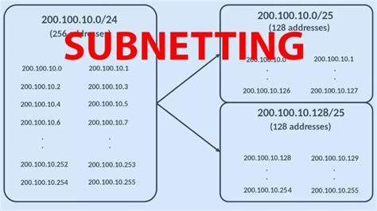
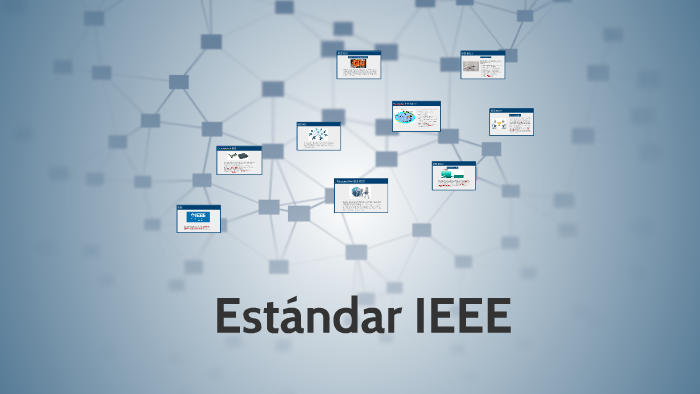

Configuración Básica del Router
Las configuraciones básicas en un router Cisco implican entender la estructura de su sistema operativo (IOS), manejar la CLI eficientemente, configurar interfaces y protocolos de enrutamiento, implementar medidas de seguridad y gestionar el dispositivo de manera efectiva para mantener la red en funcionamiento de manera segura y óptima.

Subneteo de Direcciones IP
La función del Subneteo o Subnetting es dividir una red IP física en subredes lógicas (redes más pequeñas) para que cada una de estas trabaje a nivel envío y recepción de paquetes como una red individual, aunque todas pertenezcan a la misma red física y al mismo dominio.
Protocolos IEEE (802.11 a, b, g, n)
El protocolo 'c' es utilizado para la comunicación de dos redes distintas o de diferentes tipos, así como puede ser tanto conectar dos edificios distantes el uno con el otro, así como conectar dos redes de diferente tipo a través de una conexión inalámbrica.
Elementos Inalámbricos
Una red inalámbrica conecta las computadoras sin utilizar cables de red. Los equipos utilizan comunicaciones por radio para enviar datos entre sí. Puede comunicarse directamente con otras computadoras inalámbricas o conectarse a una red existente a través de un AP inalámbrico. Son componentes tecnológicos que permiten la transmisión de datos, señales o comunicación sin la necesidad de cables físicos.


Ad Hoc
Es una red de dispositivos inalámbricos que se comunican directamente entre sí, sin necesidad de un punto de acceso centralizado. En este tipo de redes, cada dispositivo puede actuar como cliente y como punto de acceso al mismo tiempo. Las redes ad hoc son útiles en situaciones donde no hay infraestructura de red disponible, como en emergencias, entornos temporales o en lugares donde es difícil o costoso desplegar una infraestructura tradicional.